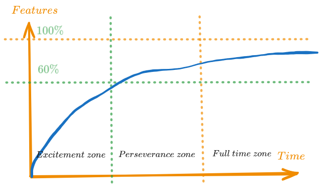

Unfinished projects are great
Unfinished projects are great !
My list of unfinished project is big. I have programmed 2 chess engines, a text-editor, a game-engine, a parser-interpreter, countless websites, python scripts, toy-games. Even this website is generated by one of my unfinished project: a website generator from static sources. And I intend to keep making it bigger and bigger, for it is what I value the most with programming: the art of exploring what computers can do.
By unfinished, I mean not usable by someone else than myself. I don't mean useless or valueless.
Coming in the world of software engineering without a computer-science related diploma (I am a mechanical engineer with a master in Robotics), these projects taught me a bunch of things, ranging from algorithms (on the top of my head: alpha-beta pruning, binary-space-partitioning, polygon splitting, max-flow solutions, shortest path), to advanced data-structure, programming techniques, languages (Rust !).
Beside being part of the learning-path, these projects are just fun. They are what keeps me passionate. How many discussions did I have, with my friends or colleague, about them.
Please, share me with what you did not finish but were excited about enough to start it !
What about big code-base, real software engineering ...
Of course that as a software developer, finishing the "last 10%" of projects is extremely important. It may as well be the hardest part. I believe this is what jobs are for ! In my experience at least, working as a software engineer means working on the last 10% while considering the first 90% as a de-facto condition for every development.
Here's what I think are the three stage of a programming project.

The last 10% requires a full-time job. It consists in a lot of bug-fixing, upgrading dependencies, and refactoring to include newer features. The first 50 to 60% is the excitement zone: it's like falling in love, everything is shiny, everything is possible, it only gets better. Until you hit the 60 to 90% zone, where most of my projects die. How many more days / commits / features I implement when I am there is really a matter of my perseverance, but usually it does not go for too long.
Working only on these last 10% (eg, at your job) is taking a risk for your passion.
At least for me. If I am honest, it is for the first 50-60 percent that I first started programming. They are the best. The dopamine of coding ! When you can just add features without having to rename 3 classes, fix 26 broken tests, counter-review commit message and waiting for your CI builds.
Don't get me wrong. There are many great things about working with finished projects ! These two go in pair. I find that my small to not-so-small unfinished projects are what keeps me fresh and fast to show every day at work and give my best.
Note to self: ideas for future projects
Here's a list of small (or not-so-small) projects that I wish I had time to start.
- A new, faster and better, chess-engine ! I start to understand well how these work, I have ideas on how to make them faster.
- Something in Rust with web-assembly. Don't know what yet.
- Fast game-of-life
- An Oberon interpret (this one, I am already working on it!)
- An Oberon transpiler
- A go-engine, because I am curious on how you would approach the problem (chess-like approach won't work, since there is no obvious score evaluation that I am aware of)